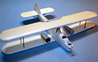

You may click on these small images to view larger pictures
Aviation USK 1/72 Heinkel He-59B/D
Kit #1008
Collector�s Market Value $30.00
Images and text Copyright � 2007 by Matt Swan
Developmental Background
In 1930 Germany was still nominally operating under the treaty of Versailles prohibiting them from developing military hardware. When Ernest Heinkel was developing this aircraft its true military nature was concealed by classifying it as a civilian aircraft. The aircraft was under development for the German Navy as a twin engined float plane constructed of various materials. The wing contained a wooden main spar with plywood and fabric covering while the fuselage was fabric around a steel frame and the tail planes were covered with light weight metal sheets.
The floats doubled as fuel tanks capable of holding 900 liters each. Even when combined with the internal fuel capacity the aircraft was still deemed to have insufficient range. While the aircraft was considered pleasant to fly it was seriously under powered. Between 1931 and 1939 one hundred forty two aircraft were manufactured and used in several roles. Some were used as trainers, some were used as torpedo bombers and most importantly, some were used as air/sea rescue aircraft. During the first months of World War II they were used to lay mines and during the Battle of Britain they were used to recover Luftwaffe pilots downed in the channel. One of the most famous and most colorful aircraft was D-ARYX, a He-59B in all white with red crosses used for SAR duty during the Battle of Britain. All examples of these aircraft were destroyed during the war and all that is left are some black and white pictures taken by crew members during their days of service.
The Kit
Aviation USK was a nice little company operating out of the State of Washington with, by all accounts, a very good service record not to mention some excellent 1/72 scale vacuform kits with injection molded details. Later the company (really the family) relocated to Nebraska and then stories began to surface about service and delivery problems. These may have been isolated incidents but regardless Aviation USK apparently sold their molds or most of the molds to Xotic-72. Several of the kits once offered by Aviation USK show up under the Xotic-72 nametag now however this particular kit does not.
This kit arrives in a sturdy white cardboard box with black artwork printed on bright pink paper attached to the cover. Inside we have three sheets of vacuformed parts formed in some very stout plastic sheet. The sheets are each of a slightly different tint ranging from off white to dirty pale yellow. While the plastic feels brittle it seems to behave very well under the knife. Panel lines are recessed, fairly crisp and consistent. When the fuselage pieces are removed from the carrier sheet the panel lines mate up perfectly and the pieces are of equal length. There is some slight warpage along the long axis but this should pull out nicely when they are glued together. The fabric texture on the fuselage and wings looks pretty good. As with most vacuformed kits there are a few vac dimples scattered across the parts that will need shaved off. The kit includes an optional nose cone for a D version but all the marking options are for B versions so some independent research will be necessary.
Finer detail parts are provided on two identical plastic sprues that remind me of what I�ve seen with the old MPM vacuformed kits. This leads me to believe that possibly MPM was contracted to do their injection molding as the general configuration and plastic type are virtually identical. The injection molded pieces cover some interior details such as a crude instrument panel, seats, guns and gun supports. Overall the interior areas are lacking in serious detail and some scratch building would benefit the kit here. Exterior components such as propellers, radiator and cowling faces and a variety of support struts are provided here also. The dark brown plastic is somewhat thick and clunky in feel with a medium level of flash and heavy sprue gates that leave chunks of plastic on the parts requiring some in-depth clean up. A single small set of vacuformed clear parts are provided in a small zip-lock baggie. This set covers the wind screens for all the upper crew positions and the nose glazing. It does not include the small panes for the dorsal gunner�s position � those will need to be scratch built from card stock.
Overall this kit consists of thirty three white or kind of white vacuformed plastic parts on three sheets, one hundred fourteen brown injection molded pieces on two sprues and six clear vacuformed parts for a total of one hundred fifty pieces, a few of which will not be used.
You may click on the small images above to view larger pictures
Decals and Instructions
The kit instructions bring MPM to mind once again. Assembly instructions are a single A-3 sized sheet printed on both sides. The A side contains a parts map for the injection molded pieces and clear parts along with a brief introduction to the kit and a very detailed aircraft specifications list. There are also two profile drawings of the interior parts placement.
The B side is a single large exploded view of the primary kit parts placement. There is a second sheet of printed material included that covers the operational history of four different aircraft and decal placement for each of these along with exterior painting instructions.
The kit decals look very nice for what we are given. We have basic markings for four different aircraft; two in standard Luftwaffe markings (one with splinter camouflage), one that served with the Condor Legion during the Spanish Civil War and the all white with red cross SAR unit that served during the Battle of Britain. The decals display very good color and adequate color density. Print registry looks good and the carrier material looks nicely thin. While the basic markings are all very nice we do not get any service stencils or warning markings that the Germans were so fond of sticking on their equipment. While I have yet to use any of these decals I can�t see any reason that they won�t behave normally.
Conclusions
On the front of the box is a brief line of text stating this kit �for experienced modelers� and this must be taken seriously. The vac parts are clean with crisp detailing; the injection molded pieces will require some clean-up but add to the kit nicely. The instructions include several titles of reference material if you care to add scratch material to this build. The instructions are adequate but need careful study and planning. The decals are nice but could benefit from some aftermarket service stencils. There are no aftermarket items made for this kit. I recommend this kit for any modeler experienced with vacuform kits and an interest in 1/72 scale Luftwaffe aircraft.
9/30/07
Construction Begins
As with any vacuform kit the first couple sessions are all about removing the kit parts from the master sheets. I had already outlined all the parts with a fine point magic marker for the review end of this article so I could immediately begin tracing the pieces with a fresh razor knife. After going over the outline of the part four times with my knife, applying progressively more pressure with each pass, I could flex the sheet and snap the parts out. Next comes the somewhat tedious job of sanding the edges. There exists a demarcation line on each part from the black marker line showing the thickness of the master sheet and each part is sanded on some black wet/dry sandpaper until the thickness of the sheet is removed to the black line. I hope that explanation was not terribly confusing to anybody not familiar with prepping vac kits. If it was just pop me off an email and I�ll explain it in more detail.
I started with the wings sanding the trailing edges a lot to try and get a nice thin trailing edge. The kit parts include some dihedral built into the wing segments which makes sanding a little tricky but not impossible. These parts are glued together and set aside. The fuselage is addressed next, it has recessed lines for most areas that need to be removed like the main cockpit and nose window but lacks and markings for the nose gunner�s station. I checked my references and made a �best guess� cut in the nose. The ventral gunners windows are not specified that they should be removed but I went ahead and cleared them planning on using some clear card stock to make windows later. The cockpit floor and bulkhead pieces were next, here some real problems cropped up. The kit instructions show all these pieces with letter designations however the master sheet shows them all with numeric designations and the parts are very, very similar in appearance. After some very careful measuring and dry fitting I hoped I had them correctly identified and began to glue them together.
Right away I could tell that this interior was going to need lots of help, it is not only extremely sparce in detail but is totally incorrect. I considered scratch building everything then decided that this was going to be too much effort in this scale. I pulled out a Special Hobby plastic copy of the He-59 that includes a nice resin cockpit. I used this pit as a master to make some molds and caste a new duplicate cockpit. These pieces fit into the Aviation USK kit perfectly.
You may click on these small images to view larger pictures
10/16/07
Once the forward and aft interior pieces had been painted and detailed to my satisfaction I installed them into the fuselage. I had to put in a few small shims to get a good fit but they went in pretty nicely. Now I need to address the gun stations, the USK kit really does not give me much to work with. After studying all the pictures I could find of this aircraft I fashioned a gun mounting ring and used it as a master for resin casting. I made a small one for the front and a larger one for the rear. The front ring was installed through the forward glazing opening. The aft one presented a greater difficulty as the USK kit shows this entire area open when it should be fairly well enclosed. After installing the spare ammo cans I began to close up the aft section with strips of Evergreen stock fashioned to fit around my resin gun mounting ring. Once all the excess was trimmed away and the seams carefully sanded it looked pretty good. The lower gun/observer station will be detailed after the exterior colors have been painted. I had taken care to leave the panel frames in place but now I�m thinking it would be a heck of a lot easier to cut them out and install a single large clear pane and use painted decal film to make new panel frames. I�ll have to think about this while I sand away at the wing joints. Soon I�ll be able to mount the lower wing to the fuselage. I'm also thinking about engine detail and wooden propellers. Now I know most aficionados would say this had RLM-71 propellers but I have found some pictures that indicate that at least on the craft I plan on modeling they were natural wood with RLM-71 cuffs.
12/2/07
Once I had the fuselage closed up and the seam work done I really lost steam on this and the whole project kind of stalled out for a while. I�ve dusted it off and have climbed back in the saddle. The elevators have been installed along with the kit provided support struts. The lower wing is glued in place and held in alignment with little blocks of modeling clay and bottles of paint. The four main wing struts have been glued in place. On the upper wing I opened holes for each strut where the kit marks existed in the plastic. This way I could secure the center pylons then adjust the tilt of the wing until the desired position was achieved. During this phase I was getting really tired of cleaning the small strut material of sprue gats and flash so decided to haul out some Aeroclub contrail material and just make new struts wherever possible. In the pictures the gray struts are contrail material and the brown struts are kit provided. By the final pictures you can see there are a lot of struts on this bird and the horizontal struts running from the engines to the fuselage are not illustrated well at all in the instructions. Fortunately I have a good amount of reference material for this plane and was able to find a couple pictures showing the correct placement.
The floats were the very first pieces I had assembled when starting this build and now is the tie to put them in place. More strut work is required with lots of patience getting things aligned and parallel. After about two hours of tinkering the floats were in place. Some final detail like access ladders and radio directional finder are installed. The propellers were started some time ago also out of necessity as the painting technique requires several days of dry time. The propellers were first assembled then airbrushed with German Sand. Once that dried I took some Burnt Sienna artist oil paint and mixed it 50/50 with some medium drying agent. With a wide, stiff bristle brush I then stroked this mixture onto the propeller until I had an acceptable wood grain. The propeller is then set aside mounted on a toothpick to dry for several days. As a final step some Tamiya clear yellow is airbrushed over it to help protect the delicate finish. The propellers will be installed as the very last item on this build.


You may click on these small images to view larger pictures
2/1/08
I have been making slow and steady progress on this build. I decided to not attempt to make a bunch of small windows for the aft ventral position instead opting to cut out the framing and install a single window. I�ll come back at the end and install white decal frames over the clear part. The two port windows were masked and glued in place. All crew openings were filled with damp tissue paper. From here I considered several painting options, I plan on painting this as the white rescue aircraft and was not sure if preshading would be appropriate. My logic here is that this was mostly a pre-war aircraft with a very good level of service so would have been kept pretty clean and well maintained. Also from the few pictures I have of the aircraft in question it did appear to be very well maintained with little evidence of weathering present. With all this in consideration preshading will be dispensed with and we will go right to paint. Since it is all white I just thinned out a full bottle of Model Master flat white and went to town so to speak. After about an hour of intense airbrushing she was white as snow.
During the painting process I did find a few minor areas that needed filling so a little Mr. Surfacer 500 was applied, allowed to dry then sanded smooth before one last coat of white was applied. Once the paint was dry the model was sealed with Future floor polish thinned with isopropyl alcohol. This was allowed to dry overnight then decals could be applied. Aviation USK decals are printed on a continuous carrier so careful trimming is needed. While they did react well to Micro-Set and Micro-Sol I did have a few minor bubble issues on one decal � don�t know what I did to cause that because none of the others from the same sheet gave me any trouble. The bubbles were poked with a needle and treated with some Micro-Sol to fix the problem. Next comes the rigging � a real challenge for me as I have done very little rigging in the past.
As I have not done a lot with rigging I started paying attention to what others were doing and I found three dominate trends. Option #1 was to use invisible thread, option #2 was to use stretched sprue and option #3 was to use lengths of wire. I never had good results getting consistent stretched sprue plus the stuff is very delicate when gluing simply because there is very little plastic. I did not like the wire idea because it would seem to be very difficult to get the lengths properly tight. Since I already have a good level of experience using invisible thread for antennas I decided to give this option a try. I attached one end of each thread with a very fine spot of super glue then touched it with some accelerator. Next with needle nose tweezers I gently pulled the thread to the next connection point and cut it off. Another fine spot of superglue, touch thread end to glue and hit with accelerator completed the connection.
Now each piece was not taunt at this point in time, I lit the end of a toothpick then blew the flame out to achieve a glowing ember and held this near the thread to tighten things up. This took just a little getting used to and I did melt off three or four lines before acquiring the correct touch. Once all the lines were in place (two weeks of and hour here, an hour there) they were brush painted with Model Master Steel. The entire model gets another coat of Future to seal the decals and build up some mass on the rigging.
4/15/08
Next thing on the list is the propellers, these are actually two twin blade props overlaid to make a four blade prop. The sit too close to the radiator so I shimmed the backside with a couple of millimeters of plastic card stock then drilled them out to accept the propeller shaft. The basic blade was first painted with some desert sand, allowed to dry then brushed again with burnt umber artist�s oil paint cut with some medium drying medium. I used a wide stiff brush and intentionally streaked the paint. This was allowed to dry for a couple weeks then coated with Future floor polish. After this had cured I brush painted the cuffs RLM-71 and installed the props on the aircraft. The center shafts are glued into the radiators and the propellers can spin freely. During all these time consuming steps I also worked on the vacuform canopies. These are all very small and I actually lost one during the trim process and had to make a replacement from some clear sheet stock. Since these are more wind shields than canopies this was not that difficult. Rather than mask and paint these little buggers I cut very thin strips from a sheet of white decal material and simply applied this to the clear part. Once it had dried down I dipped the whole thing in Future and let it cure. The final pieces were attached to the model with clear parts cement. The final details were the forward and aft machine guns and at long last this build is complete. This was done as a commission project and I had so many things going on at this time that I failed to get a lot of done pictures before the final product shipped out.


{kind=link}
{kind=link}
{kind=link}
{kind=link}
{kind=link}
{kind=link}
{kind=link}
{kind=link}
{kind=link}
{kind=link}
{kind=link}
{kind=link}
{kind=link}
{kind=link}
{kind=link}
{kind=link}
{kind=link}
{kind=link}
{kind=link}
{kind=link}
{kind=link}
{kind=link}